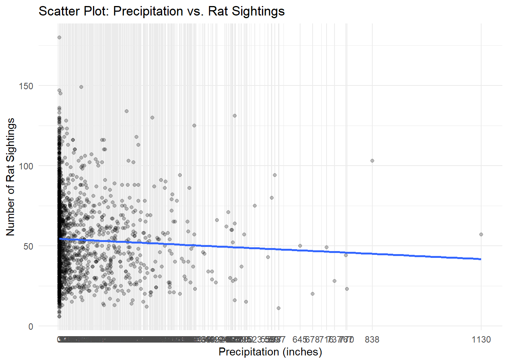

Rats & Weather Analysis
weather_df = rnoaa::meteo_pull_monitors(
c("USW00094728"),
var = c("PRCP", "TMIN", "TMAX"),
date_min = "2016-01-01",
date_max = "2022-12-31") |>
mutate(
name = recode(id, USW00094728 = "CentralPark_NY"),
tmin = tmin / 10,
tmax = tmax / 10) |>
select(name, id, everything())sightings$date <- as.Date(as.character(sightings$date), format = "%Y%m%d")
rat_weather =
right_join(sightings, weather_df, by="date")Temperature and precipitation will likely impact rat behavior and movement. Rats may be more active during certain weather conditions, seeking shelter or food. Understanding how weather conditions influence rat behavior can help identify high-risk periods for increased rat activity. Policy-makers such as the Rat Czar can use this information to allocate resources and implement targeted interventions during these times. Moreover, as climate change leads to shift in weather patterns, it will become even more important to adapt rat-control strategies to changing environmental conditions.
First, we’ll see how amount of precipitation is associated with number of rat sightings.
rat_weather |>
filter(prcp != 1811) |>
mutate(prcp = as.factor(prcp)) |>
group_by(date, prcp) |>
summarize(count = n()) |>
mutate(prcp_numeric = as.numeric(as.character(prcp))) |>
ggplot(aes(x = prcp_numeric, y = count)) +
geom_point(alpha = 0.25) +
geom_smooth(method = "glm", formula = y ~ x, se = FALSE) +
scale_x_continuous(breaks = unique(as.numeric(as.character(rat_weather$prcp))),
labels = unique(rat_weather$prcp)) +
labs(title = "Scatter Plot: Precipitation vs. Rat Sightings",
x = "Precipitation (inches)",
y = "Number of Rat Sightings")
In this plot we can see an inverse relationship between precipitation and rat sightings. This could mean that rats are less active during periods of rain, potentially preferring to stay in sheltered areas, or simply that people are less likely to go outside during times of high precipitation, leading them to not report as many rat sightings.
Next, let’s see how number of rat sightings changes with maximum temperature.
rat_weather |>
group_by(date) |>
summarize(count = n(), year, tmax) |>
ggplot(aes(x = tmax, y = count, color = year)) +
geom_point(alpha = .3) +
geom_smooth(se = FALSE, color="black") +
facet_grid(. ~ year) +
labs(title = "Maximum Temperature vs. Rat Sightings by Year",
x = "Maximum temperature (degrees Celsius)",
y = "Number of Rat Sightings")
In the above graph, we see an overall increase in number of rat sightings over the years, with annual peaks in number of sightings at ~25 degrees Celsius. This provides evidence of the need for increased pest-control interventions during the warmer months, and an even greater concern due to increasing temperatures caused by climate change.